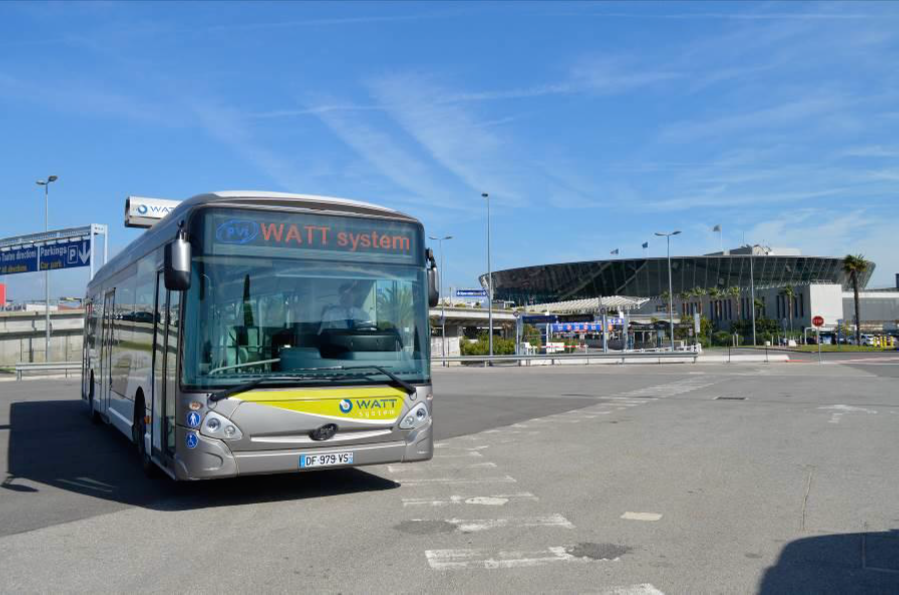

Case study presentation#
Written by Marc Budinger, INSA Toulouse, France
Before sizing a system, it is important to define all the constraints that could have an influence on the design. It is therefore advisable to list meticulously:
the power components to size in the architecture
criteria and parameters useful for the selection of components
system usage scenarios that can a effect the selection of components This is the target of this notebook.
The “Watt System”#
The WATT system includes:
In the bus : a battery pack and a ultra capcitors pack associated with an electric power train, a connection system, an automatic arm installed on the roof of the vehicle
On the sidewalk: a charging station or “totem” with the connection, as well as a pack of super capacitors, all integrated in the urban landscape.
Each totem (or charging station) is connected to the household electricity distribution network and allows charging between the passage of each bus. There is no need for specific equipment (substation, transformer). In operation the bus is powered by supercapacitors, it travels the necessary distance to the next stop, thanks to the energy stored. At each stop, the arm deploys and realizes in 10 seconds the transfer of energy between the super capacitors of the totem and the super capacitors onboard the bus. An adapted Lithium-ion battery pack is installed in the bus for cases of impossibility of connection and trips without passengers.
System Watt 
Ultracapacitors modules#
The major innovation of WATT System is the boost charge of the vehicle which consists in carrying out a transfer of energy from the stopping post (Totem) to the vehicle during the time of exchange of passengers. WATT System makes it possible to overcome the limits imposed by battery electric vehicles in terms of autonomy and passenger capacity, while minimizing urban infrastructure and energy needs.
Boost charge with Ultra-Capacitors

Totem

DC/DC converters#
The following two diagrams describe an example of possible converters and control loops for the system Watt.
Possible power converters for the Watt system

Possible control loops for ultracapacitors

Questions#
Using the following FAQ about ultracapacitors and your knowledge on power electronics converters, answer the following questions:
What is the interest of the Watt system compared to battery energy storage ?
What is the main constraint of the Watt system compared to battery storage ?
What are the converters in the totem and what are their functions ?
What is the nature of the converter (B) ?
What is the nature of the converter (D) ?
What are the inductors function used for converters (B) and © ?
Explain the operation of the control loops during starting and braking of the bus.